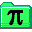
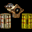
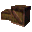

Размер архива: 95Кб
Размер архива: 1.41Мб
Размер архива: 899Кб
Размер архива: 456Кб
Размер архива: 465Кб
|
Красивый Wallpaper в разрешении 800*600, посвященный нашей команде. Размер архива: 359Кб |
|  |
PakScape - программа для просмотра, редактирования и создания Pak-файлов
(для тех, кто в танке: именно в этих файлах хранятся ресурсы Кваки). Размер архива: 95Кб |
|
KeyGrip - програма для редактирования демок Quake2. Размер архива: 1.41Мб |
|
|
Полная версия конфига для Quake 2 от [ArX]team. Размер архива: 899Кб |
|
|
Облегченная (без демок) версия конфига для Quake 2 от [ArX]team. Размер архива: 456Кб |
|
|  |
Наши демки для Quake 2 (их включает полная версия нашего конфига). Размер архива: 465Кб |
|
ADoM Launcher - программа для roguelike-читеров, которые не любят, когда их сейв стирают в результате
смерти персонажа. ADOM Launcher автоматически создает резервные копии сохраненок. Поставляется с исходниками. Размер архива: 156Кб |
|
|
Программа HowToProg предназначена для обучения программированию в Паскале. Обучение происходит через
просмотр создания демонстрационных программ. Процесс сопровождается комментариями, объясняющими правила синтаксиса и
принципы алгоритма. Поставляется с исходниками. Размер архива: 402Кб |
|
|
ConsoleUtils - модуль для Delphi для работы с консолью Windows. Размер архива: 1.85Кб |
|
|  |
ReCrating - демонстрация того, что можно сделать используя наш модуль ConsoleUtils. Представляет собой
клон BoxWorld в текстовом режиме с поддержкой "скриптов" и некоторых других интересных фишек. Поставляется с исходниками. Размер архива: 156Кб |
|
ImgCmp 1.4.0 - Программа для поиска похожих (но не попиксельно одинаковых) картинок в вашей коллекции.
Позволяет не хранить одно и то же в нескольких местах. Имеет гибкие настройки, ведет базу обработанных картинок - однажды
просканированные картинки в будущем будут обрабатываться гораздо быстрее. Поставляется с исходниками. Размер архива: 506Кб |
|
|
Noise Example1 Example2 |
Noise - Реализация алгоритма генерации шума Perlin Noise для создания реалистичного ландшафта.
Прога очень тормозная, т.к. закодена кривыми руками. Зато дело свое делает. Имеются также 2 примера работы. Размер архивов: 48Кб, 2Мб, 2Мб. |
| X |
Кучка программ на Паскале - мои первые попытки программирования трехмерной графики, как полигональной, так и на основе
ray-casting'а с динамическим освещением и тенями. Размер архива: 303Кб |